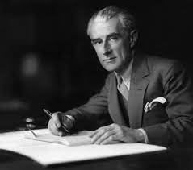

Ravel grew up in a musical family and showed a talent for music at an early age. He began studying piano with his mother when he was just seven years old and later attended the Paris Conservatoire, where he studied composition with Gabriel Fauré. Ravel's early works were influenced by the impressionist composers of his time, such as Claude Debussy, but he soon developed his unique style, which was characterized by his love for clear forms and tonal colors.
Major Works
- Boléro
- Daphnis et Chloé
- Ma mère l'Oye
- Piano Concerto in G major
- Le Tombeau de Couperin
- String Quartet in F major
- Gaspard de la nuit
Ravels Contributions to Modern Music Genres
Ravel was a key figure in the development of modern music in the early 20th century. His music was groundbreaking in its use of harmony, rhythm, and form, and he was a significant influence on many composers who followed him. Ravel was instrumental in the development of impressionism and neoclassicism, two important movements in modern music. He was a master of orchestration, and his works for orchestra are among his most famous and frequently performed pieces.
Memory Problems
Ravel was listening to a recording of his String Quartet in F Major in 1932, which was played for him by musicologist Roland-Manuel. After listening to the piece, Ravel asked who the composer was, to which Roland-Manuel replied that it was Ravel himself. Ravel was reportedly quite distressed by his forgetfulness and the incident was one of the factors that prompted him to retire from composing. Despite his memory problems, Ravel continued to enjoy music and would often ask friends to play his works for him.

Ravel and Wittgenstein
Left-Hand Concerto
The story of Ravel's Piano Concerto for the Left Hand is one of tragedy and triumph. It was commissioned by Paul Wittgenstein, a pianist who had lost his right arm in World War I. Ravel was initially hesitant to accept the commission, but he eventually agreed and set to work on the piece. The concerto is known for its virtuosic and expressive left-hand solo part, which showcases the full range and capabilities of the left hand alone. It also features Ravel's characteristic use of harmony and timbre, with lush orchestration and a dramatic opening theme. However, the composition process was not without its challenges. Ravel was known for his perfectionism, and he reportedly worked on the concerto for several years, often becoming frustrated and even depressed with the progress. He once remarked that the piece was "not a piece for a pianist with one hand, but a piece for a pianist with two hands who has temporarily lost one." Despite these challenges, Ravel eventually completed the concerto, and Wittgenstein gave the premiere performance in 1932. The piece was met with critical acclaim, and it remains a staple of the piano concerto repertoire to this day. The left hand concerto is a testament to Ravel's skill as a composer, his ability to rise to the challenge of a unique commission, and his dedication to crafting a work of lasting beauty and significance.
Personal Life
Ravel was a private person and little is known about his personal life. He never married and had few close relationships. He was known for his meticulous attention to detail and his fastidiousness, both in his personal life and in his music. Ravel was a perfectionist who was constantly revising and refining his compositions.
Legacy
Ravel's music continues to be widely performed and recorded and remains a significant influence on contemporary composers. His unique style and innovative approach to composition have inspired generations of musicians and continue to be celebrated for their beauty, elegance, and sophistication.
Ravel: La Valse performed by Leonard Bernstein and Orchestre National de France
La Valse
I chose this piece as the sample for Ravel for the sheer orchestration genius represented in this work. "La Valse" is a symphonic poem written by Maurice Ravel in 1920, originally intended to be a ballet score but later adapted for orchestra. The work is a musical representation of a waltz, but with a dark and macabre twist. Ravel's inspiration for the piece came from the end of the Viennese waltz era and the destruction wrought by World War I. The waltz is depicted as a decaying relic of a bygone era, with the music gradually descending into chaos and dissonance. The initial elegant waltz theme is repeated and distorted throughout the piece, as the music becomes more frenzied and ominous. The piece ends with a violent climax that suggests the final collapse of the waltz culture "La Valse" was met with mixed reactions upon its premiere, with some critics accusing Ravel of being too dissonant and radical. However, the piece has since become a staple of the orchestral repertoire, and is considered one of Ravel's most iconic works. Its combination of elegant waltz themes and dissonant modernism has made it a favorite of audiences and critics alike.
The Death
Ravel suffered from a degenerative brain disorder in his later years, which led to his premature death at the age of 62. He spent the last few years of his life in a state of dementia and was unable to compose or perform. In his final days, he was reportedly listening to recordings of his own music and would ask who had written the pieces, not recognizing them as his own. His death was a significant loss to the music world, and his legacy continues to live on through his music.